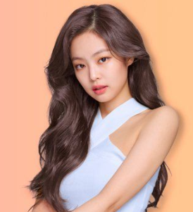

Jennie Kim is a South Korean singer and rapper. Born and raised in South Korea, Kim studied in New Zealand at the age of eight for give years, before returning to South Korea in 2010. She later debuted as a member of the girl group BLACKPINK under YG Entertainment in August 2016.
Jennie had an audition with YG when she was only 14 years old and got in, then spent six years training. Now as one of the main rappers of BLACKPINK, Jennie is arguably one of the most popular members and was the first in the group to release her own song in 2018, appropriately titled SOLO with over 540 million views on YouTube. (It also became the most viewed music video by a female Korean solo artist of all time within its first 24 hours of release.)
Kim Jisoo is a South Korean singer and actress. She made her debut in August 2016 as a member of the gir group BLACKPINK under YG Entertainment.
In addition to her work as a BLACKPINK member, Jisoo has acting creds under her belt. She has made cameo appearances in shows such as The Producers and Arthdal Chronicles and will play the lead in the upcoming Korean drama Snowdrop. The singer is also a certified fashionista, landing campaigns with the likes of Dior and Cartier. In fact, Jisoo was Dior's muse and modeled for the fall/winter 2020 collection. Fun facts: Jisoo is trilingual and speaks Korean, Chinese, Japanese, and has a white Maltese dog named Dalgom.
Lalisa Manoban is a Thai rapper, singer, and dancer based in South Korea. She is a member of the South Korean girl group BLACKPINK under YG Entertainment.
Currently, Lisa is the main rapper and also the lead dancer of BLACKPINK. She was the first non-ethnically Korean to debut under YG. Like the rest of her fellow BLACKPINK members, Lisa has landed many television appearances on Korean variety shows and endorsement deals from brands. She served as Moonshot's brand ambassador in 2018; in 2019, she became the muse for Hedi Slimane of Celine. In 2020, Lisa was crowned the newest brand ambassador of Bulgari and participated in the Serpenti and B.zero1 campaigns.
Roseanne Park is a New Zealand singer raised in Australia and based in South Korea. Rośe made her debut as a vocalist in the girl group BLACKPINK in August 2016.
Like the other BLACKPINK members, Rosé has landed many endorsement deals, like starring as the global face for Saint Laurent's fall/winter 2020 campaign. She and Jisoo were also selected to rep the South Korean cosmetics brand Kiss Me. Rosé's latest project, however, will be the most exciting to BLINKs, especially those who love her voice, as she is scheduled to release her own songs following BLACKPINK's The Album.